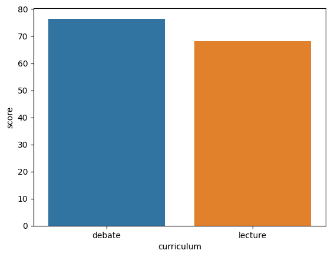
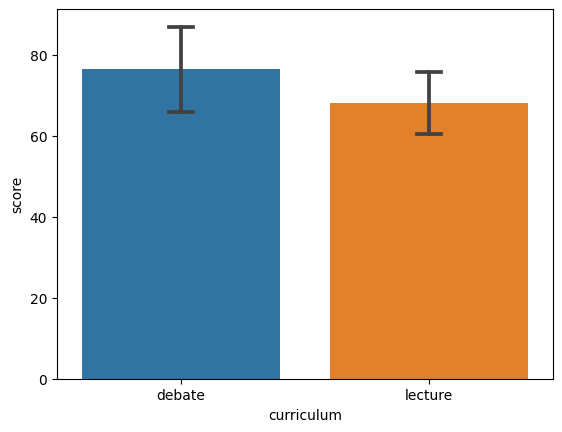

Solutions to Chapter 1 (DATA) problems
Contents
Solutions to Chapter 1 (DATA) problems#
import seaborn as sns
import pandas as pd
import os
file_path = os.path.join("..", "datasets", "students.csv")
if os.path.exists(file_path):
data_file = open(file_path)
else:
import io
data_file = io.StringIO("""
student_ID,background,curriculum,effort,score
1,arts,debate,10.96,75
2,science,lecture,8.69,75
3,arts,debate,8.6,67
4,arts,lecture,7.92,70.3
5,science,debate,9.9,76.1
6,business,debate,10.8,79.8
7,science,lecture,7.81,72.7
8,business,lecture,9.13,75.4
9,business,lecture,5.21,57
10,science,lecture,7.71,69
11,business,debate,9.82,70.4
12,arts,debate,11.53,96.2
13,science,debate,7.1,62.9
14,science,lecture,6.39,57.6
15,arts,debate,12,84.3
""")
students = pd.read_csv(data_file, index_col="student_ID")
Problem {prob:bar-chart_score-vs-curriculum}#
import numpy as np
from statistics import mean
sns.barplot(x="curriculum", y="score", data=students,
estimator=np.mean, errorbar=None)
<AxesSubplot: xlabel='curriculum', ylabel='score'>

Problem {prob:bar-chart_score-vs-curriculum-enhanced}#
import numpy as np
from statistics import mean
sns.barplot(x="curriculum", y="score", data=students,
estimator=np.mean, errorbar="sd", capsize=.1)
<AxesSubplot: xlabel='curriculum', ylabel='score'>
